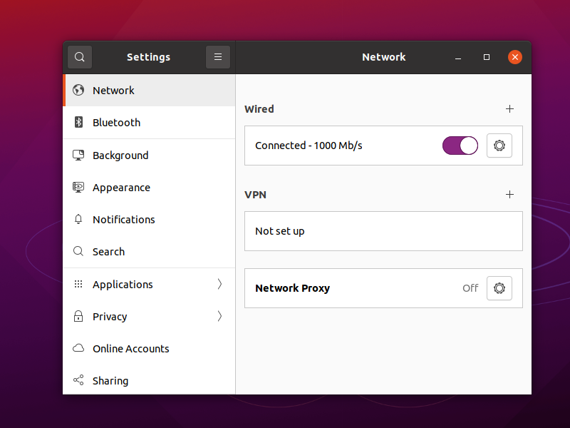

OpenConnect
OpenConnect works in some countries that practice censorship. It uses HTTP and HTTPS to make the connection, then attempts to switch to UDP for the actual transport.
The software was originally designed to be compatible with Cisco AnyConnect SSL VPN. Support was later added for compatibility with Juniper SSL VPN and Pulse Connect Secure.
This article shows you how to install OpenConnect on CentOS 8 or Debian 10+ servers. Note that CentOS 8 reaches end-of-life on December 31, 2021.
The article ends with some pointers to OpenConnect clients.
You will need a server with a registered domain name (free or paid) if you want to follow along. We give the server hostname as vpn.yyyyy.xyz in our
examples. You will need to change this to whatever your actual hostname is.
1. Server
1.1. Install and Configure Firewall
If your server runs CentOS 8, install a firewall and configure it to accept traffic on ports 80/tcp, 443/tcp, and 443/udp like this. Install and start the firewall:
yum update -y
yum install firewalld -y
systemctl enable firewalld
systemctl start firewalld
Add the firewall rules for ports 80 and 443, and masquerade the outgoing source IP address:
firewall-cmd --add-service=http
firewall-cmd --add-service=https
firewall-cmd --add-port=443/udp
firewall-cmd --add-masquerade
firewall-cmd --runtime-to-permanent
For better security, restrict port 22 access to trusted IP addresses only. For example, if you always log in from IP address xx.xx.xx.xx, make that the
only IP address that will be trusted for SSH access:
firewall-cmd --zone=trusted --add-service=ssh
firewall-cmd --zone=trusted --add-source=xx.xx.xx.xx/32
firewall-cmd --zone=public --remove-service=ssh
firewall-cmd --zone=public --remove-service=cockpit
firewall-cmd --runtime-to-permanent
If your server runs Debian 10+ or Ubuntu, install and configure your firewall like this. Install and start the firewall:
apt update && apt upgrade -y
apt install nftables -y
systemctl enable nftables
systemctl start nftables
Add the basic firewall rules:
nft add rule inet filter input ct state related,established counter accept
nft add rule inet filter input iif lo counter accept
nft add rule inet filter input ip protocol icmp counter accept
nft add rule inet filter input ip6 nexthdr icmpv6 counter accept
nft add rule inet filter input tcp dport { http, https } counter accept
nft add rule inet filter input udp dport https counter accept
Open port 22 for SSH. If you can restrict the port 22 rule so that only certain source IP addresses are whitelisted for SSH access, then
so much the better. For example, if your workstation always has IP address xx.xx.xx.xx:
nft add rule inet filter input tcp dport 22 ip saddr xx.xx.xx.xx/32 counter accept
If you cannot predict your workstation IP address, you will have to open port 22 to the whole world.
Drop unexpected traffic:
nft add rule inet filter input counter drop
Carry out network address translation (nat), and masquerade the IP address on outbound packets:
nft add table nat
nft add chain nat prerouting { type nat hook prerouting priority 0 \; }
nft add chain nat postrouting { type nat hook postrouting priority 100 \; }
nft add rule nat postrouting ip saddr 10.0.8.0/24 masquerade
Save these firewall rules:
nft list ruleset > /etc/nftables.conf
1.2. Allow Forwarding
Now enable packet forwarding in the Linux kernel.
On CentOS, create a new configuration file in /usr/lib/sysctl.d:
vi /usr/lib/sysctl.d/40-ipv4-forward.conf
On Debian or Ubuntu, create a new configuration file in /etc/sysctl.d:
vi /etc/sysctl.d/40-ipv4-forward.conf
In either case, insert a single line:
net.ipv4.ip_forward=1
Save the file. Make this change effective immediately. On CentOS:
sysctl -p /usr/lib/sysctl.d/40-ipv4-forward.conf
On Debian or Ubuntu:
sysctl -p /etc/sysctl.d/40-ipv4-forward.conf
1.3. Install Let’s Encrypt Client
On CentOS 8:
yum install epel-release -y
yum install certbot -y
On Debian or Ubuntu:
apt install certbot -y
In either case, request your certificate as follows. Replace vpn.yyyyy.xyz in the next command by your actual hostname:
certbot certonly --standalone --agree-tos --register-unsafely-without-email -d vpn.yyyyy.xyz
Your certificate is stored at /etc/letsencrypt/live/vpn.yyyyy.xyz/fullchain.pem, and its private key is stored at
/etc/letsencrypt/live/vpn.yyyyy.xyz/privkey.pem.
Set up the timer for regular checks for renewal. On CentOS 8:
echo "0 0,12 * * * root python3 -c 'import random; import time; time.sleep(random.random() * 3600)' && certbot renew -q" | sudo tee -a /etc/crontab >
/dev/null
On Debian or Ubuntu:
certbot renew --dry-run
1.4. Install OpenConnect on Server
Install the OpenConnect package. On CentOS 8:
yum install ocserv -y
On Debian or Ubuntu:
apt install ocserv -y
1.5. Configure OpenConnect on Server
Edit the OpenConnect configuration file:
vi /etc/ocserv/ocserv.conf
Make the following changes. Refer to the OpenConnect manual on GitLab if you want to understand the options available to you.
- Enable authetication by password file by changing the authentication to
auth = "plain[passwd=/etc/ocserv/ocpasswd]" - Change the server certificate and private key locations to
/etc/letsencrypt/live/vpn.yyyyy.xyz/fullchain.pemand/etc/letsencrypt/live/vpn.yyyyy.xyz/privkey.pem, replacingvpn.yyyyy.xyzby your actual hostname - Comment out or remove the line for
ca-cert, since we are not using certificate authentication for clients - In the
default-domainline, put your actual domain name - Specify the virtual IP address range for your VPN, for example
ipv4-network = 10.0.8.0andipv4-netmask = 255.255.255.0 - If you want DNS resolution on the server rather than at clients, insert a line
tunnel-all-dns = trueand specify two DNS servers, e.g.dns = 8.8.8.8anddns = 8.8.4.4 - If clients need to access their LAN without going through the server, then specify that the LAN subnet should not be routed through the tunnel, for example
no-route = 192.168.0.0/255.255.0.0(and delete theroutelines
If you find the comments and blank lines in the configuration file helpful, then leave them in. If you want to remove comments and blank lines with the
vi editor, then issue global commands to delete lines that begin with # or are blank:
:g/^#/d
:g/^$/d
Here is an example of a completed OpenConnect configuration file for CentOS 8:
auth = "plain[passwd=/etc/ocserv/ocpasswd]"
tcp-port = 443
udp-port = 443
run-as-user = ocserv
run-as-group = ocserv
socket-file = ocserv.sock
chroot-dir = /var/lib/ocserv
server-cert = /etc/letsencrypt/live/vpn.yyyyy.xyz/fullchain.pem
server-key = /etc/letsencrypt/live/vpn.yyyyy.xyz/privkey.pem
isolate-workers = true
max-clients = 16
max-same-clients = 2
server-stats-reset-time = 604800
keepalive = 32400
dpd = 90
mobile-dpd = 1800
switch-to-tcp-timeout = 25
try-mtu-discovery = false
cert-user-oid = 0.9.2342.19200300.100.1.1
tls-priorities = "@SYSTEM:%SERVER_PRECEDENCE"
auth-timeout = 240
min-reauth-time = 300
max-ban-score = 80
ban-reset-time = 1200
cookie-timeout = 300
deny-roaming = false
rekey-time = 172800
rekey-method = ssl
use-occtl = true
pid-file = /var/run/ocserv.pid
device = vpns
predictable-ips = true
default-domain = yyyyy.xyz
ipv4-network = 10.0.8.0
ipv4-netmask = 255.255.255.0
tunnel-all-dns = true
dns = 8.8.8.8
dns = 8.8.4.4
ping-leases = false
no-route = 192.168.0.0/255.255.0.0
cisco-client-compat = true
dtls-legacy = true
And here is an example of a completed OpenConnect configuration file for Debian 10+ or Ubuntu:
auth = "plain[passwd=/etc/ocserv/ocpasswd]"
tcp-port = 443
udp-port = 443
run-as-user = nobody
run-as-group = daemon
socket-file = /run/ocserv.socket
server-cert = /etc/letsencrypt/live/vpn.yyyyy.xyz/fullchain.pem
server-key = /etc/letsencrypt/live/vpn.yyyyy.xyz/privkey.pem
isolate-workers = true
max-clients = 128
max-same-clients = 2
server-stats-reset-time = 604800
keepalive = 300
dpd = 60
mobile-dpd = 300
switch-to-tcp-timeout = 30
try-mtu-discovery = false
cert-user-oid = 0.9.2342.19200300.100.1.1
compression = true
no-compress-limit = 256
tls-priorities = "NORMAL:%SERVER_PRECEDENCE:%COMPAT:-RSA:-VERS-SSL3.0:-ARCFOUR-128"
auth-timeout = 240
idle-timeout = 1200
mobile-idle-timeout = 1800
min-reauth-time = 3
max-ban-score = 50
ban-reset-time = 300
cookie-timeout = 300
deny-roaming = false
rekey-time = 172800
rekey-method = ssl
use-occtl = true
pid-file = /run/ocserv.pid
device = vpns
predictable-ips = true
default-domain = yyyyy.xyz
ipv4-network = 10.0.8.0
ipv4-netmask = 255.255.255.0
tunnel-all-dns = true
dns = 8.8.8.8
dns = 8.8.4.4
ping-leases = falsereboot
no-route = 192.168.0.0/255.255.0.0
cisco-client-compat = true
dtls-legacy = true
After making these changes, save your amended configuration file.
1.6. Add Client Users
For each user, set up a username and password, using the command below as a model, and replacing john by your actual username:
ocpasswd -c /etc/ocserv/ocpasswd john
When prompted, enter and reenter the password for user john. For example:
nq3vwr766zqmj4da
nq3vwr766zqmj4da
You can repeat this process if you have multiple users.
1.7. Start OpenConnect Server
Now restart OpenConnect with your revised configuration.
On CentOS 8:
systemctl enable ocserv
ystemctl start ocserv
On Debian or Ubuntu:
systemctl restart ocserv
Check that OpenConnect is active and running:
systemctl status ocserv
You may get an error saying, error connecting to sec-mod socket 'ocserv.sock.xxxxxxxx': No such file or directory. This does not seem to make any
difference, as the file gets created anyway. You can check that OpenConnect is listening on ports 443/tcp and 443/udp with the command:
ss -tulpn | grep ocserv
2. Clients
2.1. Linux
OpenConnect in NetworkManager has been integrated with GNOME. On CentOS 8 clients, install the package and its dependencies:
sudo yum install epel-release -y
sudo yum install NetworkManager-openconnect-gnome -y
On Debian 10+ or Ubuntu, install the package and its dependencies:
sudo apt install network-manager-openconnect-gnome -y
In either case, add your VPN configuration from the GNOME Settings > Network page.
- Type is Multi-protocol VPN client (openconnect) or Cisco AnyConnect Compatible
- Name as desired, e.g.
New York - Protocol is Cisco AnyConnect or openconnect
- Gateway is your server hostname, e.g.
vpn.yyyyy.xyzin our example
Click Add to add the new VPN.
Toggle the connection to the ON position. Enter your username. Enter your password. Check Save passwords. Click Login.
2.2. Windows
Install the OpenConnect GUI for Windows from GitHub.
2.3. Android
For Android devices, install OpenConnect by Digital Software Group from the Google Play Store.
3. Get Help and Report Issues
You can ask questions and raise issues in these two places:
- On the Mailing list
- In the GitLab issues section
Updated 2021-06-18